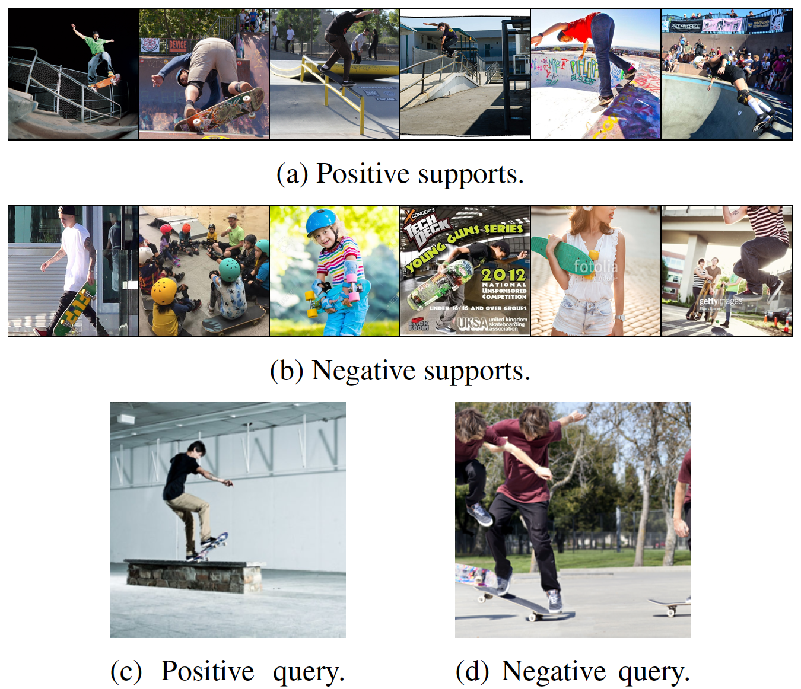
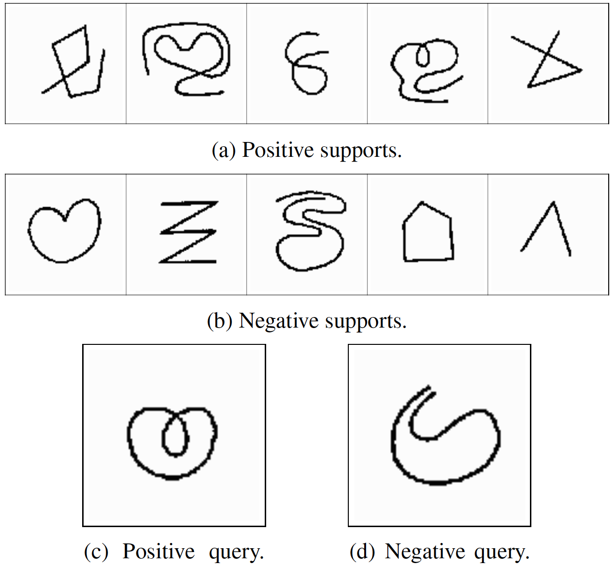

Cross-Image Context Matters for Bongard Problems
Nikhil Raghuraman Adam W. Harley Leonidas J. Guibas
Abstract
Current machine learning methods struggle to solve Bongard problems, which are a type of IQ test that requires deriving an abstract "concept" from a set of positive and negative "support" images, and then classifying whether or not a new query image depicts the key concept. On Bongard-HOI, a benchmark for natural-image Bongard problems, existing methods have only reached 66% accuracy (where chance is 50%). Low accuracy is often attributed to neural nets' lack of ability to find human-like symbolic rules. In this work, we point out that many existing methods are forfeiting accuracy due to a much simpler problem: they do not incorporate information contained in the support set as a whole, and rely instead on information extracted from individual supports. This is a critical issue, because unlike in few-shot learning tasks concerning object classification, the "key concept" in a typical Bongard problem can only be distinguished using multiple positives and multiple negatives. We explore a variety of simple methods to take this cross-image context into account, and demonstrate substantial gains over prior methods, leading to new state-of-the-art performance on Bongard-LOGO (75.17%) and Bongard-HOI (72.45%) and strong performance on the original Bongard problem set (60.84%).
Overview
|  |  |
Bongard Problems Deep Dive
Bongard problems are a kind of visual reasoning task. Every Bongard problem depicts a visual “concept.” The human or AI is provided with two sets of images: the positive “support set” contains only images depicting that concept, and the negative “support set” contains only images that do not depict that concept. Examples of concepts are “shape contains three sides” and “human is eating apple.” The goal of the problem is to determine the concept in play, given these support images.
To aid large-scale evaluation of AI systems, the task can be posed slightly differently. Rather than predict the concept, the AI is expected to classify unseen query images as either positive or negative given the positive and negative support sets for a Bongard problem.
The figure above contains three kinds of Bongard problems. The first and third Bongard problems contain only symbolic images, and the second problem contains natural images depicting human-object interactions. Can you figure out the concepts in play?
Why Cross-Image Context?
Bongard problems cannot be solved without incorporating cross-image context. Consider the third Bongard problem above. Would you be able to determine the concept if you couldn’t simultaneously consider multiple positive and negative supports and how they are similar and different?
Method Overview
We propose two methods for incorporating cross-image context. We demonstrate the success of these methods when combined with three baseline classifiers: k-nearest neighbors (k-NN), support vector machines (SVM), and “Prototype,” where we compute an average over each of the positive and negative support sets and classify a query according to the closer average. Although these approaches are simple, combining them with cross-image context sets a new state-of-the-art on Bongard datasets.
Cross-Image Context via Standardization
In the first method, we calculate a mean and standard deviation over the support set of each Bongard problem and use these statistics to standardize every image embedding, including those of the queries, before inputting them into a classifier. Intuitively, this method adapts each image embedding using context (i.e., mean and standard deviation) from all other images in the support set. This form of normalization outperforms other forms that do not incorporate cross-image context.
Cross-Image Context via Transformer
We also learn cross-image context. The first approach operates on one Bongard problem at a time, but in this learned setting, we can use large training sets to learn priors that apply to multiple problems.
We use a Transformer to learn cross-image context. We first embed every support image using an image encoder, standardize, and then input the standardized embeddings into the Transformer by treating each embedding as a token. We choose a Transformer over other architectures due to self-attention, which easily enables the incorporation of cross-image context.
Given the support set for a single Bongard problem, we train our Transformer to directly output “rule(s)” for solving that problem. These “rule(s)” can then be used to classify queries. We explore two forms of rules in our paper. SVM-Mimic produces a hyperplane decision boundary to separate positive and negative support instances, just like SVMs. Prototype-Mimic produces two rules: a prototype for each class.
Results
We set a new state-of-the-art on Bongard-LOGO and Bongard-HOI, two benchmark Bongard datasets. Standardization improves the performance of the classifiers in every case. Our Transformer approach leads to further performance improvements, with SVM- and Prototype-Mimic outperforming their corresponding baseline classifiers.

Limitations
One limitation of our approach is sensitivity to the choice of encoder. It may be that as the strength of the encoder increases, the need for sophisticated cross-image context decreases, and statistical standardization may suffice. We also note that our Bongard-LOGO results appear to have benefited greatly from a contrastive learning stage that we incorporate to train our encoder, and perhaps other methods could be improved by incorporating our feature-learning technique.
Paper